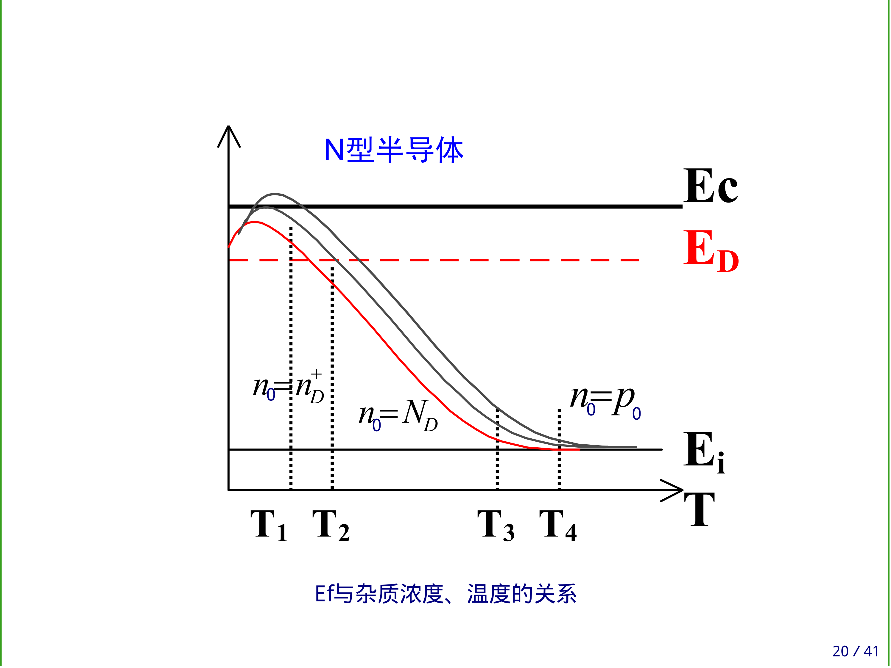
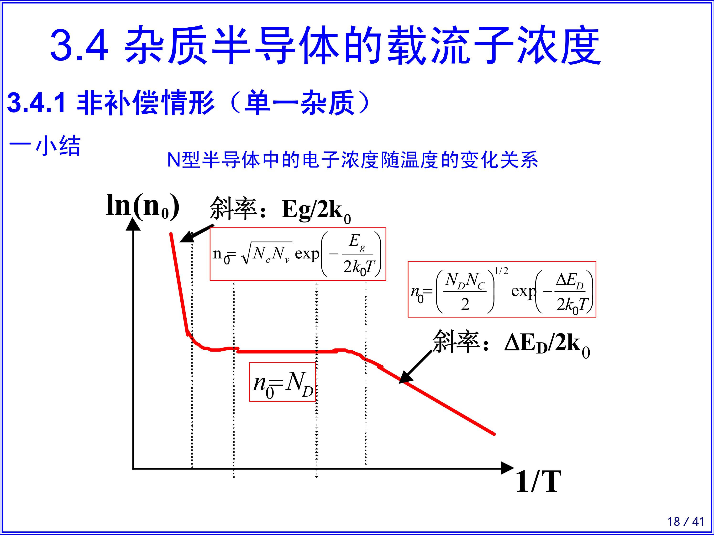
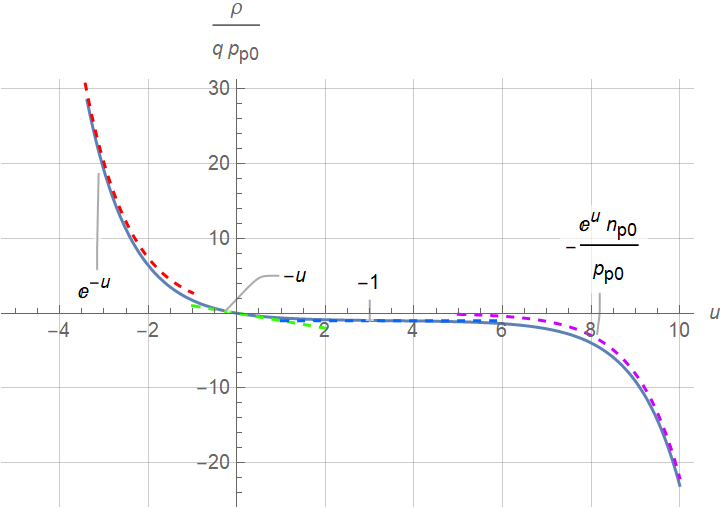
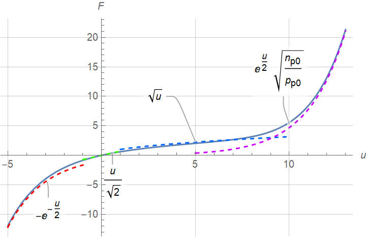

半导体物理¶
§0 固体物理¶
2022年2月26日。
晶向、晶面分别用[···]、(···)表示，相应等价类分别用<···>、{···}表示。都是方向向量或法向量的坐标分量最简整数比。（负数写作“\(\bar{\cdot}\)”）
§1 电子状态¶
2022年3月20日。
自由电子：\(\vb*{p} = \hbar \vb*{k}\)，\(E = \hbar \omega\)。
晶体中电子：\(\vb*{p}_\text{crystal} := \hbar \vb*{k}\)（“crystal”可能省略），\(\vb*{v}_\text{group} = \dv{E}{\vb*{k}}\)。
第一 Brillouin 区边界：\(\exists \vb*{G} \in \Z \vb*{b}_1 + \Z b_2 + \Z \vb*{b}_3\)，\(\abs{\vb*{k} + \vb*{G}} = \abs{\vb*{k}}\)，即 \(\vb*{k} \vdot \vu*{G} = -\frac12 G\)。
\(\vb*{a} := \dv{t} \vb*{v}_\text{group}\)，\(\vb*{F} := \dv{t} \vb*{p}\)，故
其中的系数称为 inverse mass tensor。选取适当坐标轴，可对角化之，其分量还原为质量量纲后，称为（导带底或价带顶）电子（或空穴）有效质量 \(m^*\)。
2022年4月6日。
单电子近似：晶体中的某一个电子是在周期性排列且固定不动的原子核的势场，以及其它电子的平均势场（也有周期，且与原子核相同）中运动。
§3 载流子浓度¶
背景¶
2022年4月6日。
热平衡：载流子激发与复合动态平衡。
一些公式¶
2022年3月20–21日。
基本都是在导带底或价带顶讨论的。
状态密度¶
状态密度（考虑自旋）
其中 \(p\) 是相对极值点的晶体动量。对于电子，\(p = \sqrt{2 m_n^* (E-E_c)}\)。
Fermi—Dirac 分布¶
Fermi—Dirac 分布中，量子态被电子占据的概率
其中 \(E_F\) 称作 Fermi 能级，半导体物理中一般等于化学势 \(\mu\)。
\(\FD\) 函数是我随便起的名字，它指 standard logistic function 的“负”函数，即 \(1 / (1 + \exp{x})\)。
它的一些性质：
- \(\FD(x) + \FD(-x) = 1\)。
- \(x\to +\infty\) 时，\(\FD(x) \sim \exp(-x)\) ——Fermi—Dirac 分布退化为 Maxwell—Boltzmann 分布，此时称“非简并半导体”。
\(\FD(x + \ln \gamma) + \FD(-x + \ln{\gamma^{-1}}) = 1\)，即
\[ \frac{1}{1+\gamma \exp{x}} + \frac{1}{1 + \gamma^{-1} \exp(-x)} = 1. \]
载流子浓度¶
导带电子、价带空穴浓度
非简并时（与 \(k_BT\) 相比，\(E_v \ll E_F \ll E_c\)）可用 Maxwell—Boltzmann 分布替代 Fermi—Dirac 分布；积分区间可从 \((E_c, E_c')\) 或 \((E_v', E_v)\) 近似为 \((E_c, +\infty)\) 或 \((-\infty, E_v)\)。计算可得
其中
称作有效状态密度。（量纲同倒空间中的体积）
故下式与 \(E_F\) 无关。\(n_\text{intrinsic}\) 称作本征载流子浓度。
另外注意 \(N_{c/v} = \order{T^{3/2}}\)，故由 \(T^{-3/2} \ln n_i\)—\(1/T\) 图线的斜率可测得 \(E_g\)。
使 \(n_0 = p_0 = n_i\) 的 \(E_F\) 记作 \(E_i\)。这样可给出更对称的形式：
杂质¶
每个杂质能级最多容纳一个电子，不像能带里那样可被自旋相反的两个电子占据。但仍类似 Fermi—Dirac 分布：
其中
- \(g\) 是基态简并度，又称简并因子。\(g_\text{donor} = 2\)，\(g_\text{acceptor} = 4\)。
- 对于施主，\(\Delta E = E_D - E_F\)；对于受主，\(\Delta E = E_F - E_A\)。
一般 \(E_F > E_A \gtrsim E_v\)，\(E_F <E_D \lesssim E_c\)。
因此未电离的浓度 \(n_D = N_D f\)，\(p_A = N_A f\)。
电离的浓度自然是 \(N(1-f)\)，即
其中 \(N_{D/A}\) 是施主／受主杂质浓度。
——离目标越远，电离浓度越低。
电中性条件：
非简并半导体的 \(E_F\)—\(T\) 关系¶
论证¶
联立以上几式，可解出 \(E_F\)，进而得到 \(E_F\) 随温度 \(T\) 的变化关系。
以掺了一种施主杂质的 n 型半导体为例。（\(p_A^- = 0\)，\(n_D^+ > 0\)）
-
低温：“非主流”载流子可忽略（\(\boxed{ p_0 = 0 }\)，\(n_0 = n_D^+\)）。
-
弱电离：\(n_D^+ \ll N_D\)，施主电离部分退化为 Maxwell—Boltzmann 分布。
\[ n_D^+ = \frac{N_D}{g_D} \exp\frac{E_D - E_F}{k_B T}. \]故
\[ n_0 n_D^+ = N_c \frac{N_D}{g_D} \exp\frac{-\Delta E_D}{k_B T}. \]其中 \(\Delta E_D := E_c - E_D\) 是电离能。
代入电中性条件可得 \(n_0 = \sqrt{n_0 n_D^+}\)， 从而由 \(T^{-3/4} \ln n_0\)—\(1/T\) 图线的斜率可测得 \(\Delta E_D\)。
另外可解得
\[ 2E_F = E_D + E_c + k_B T \ln\frac{N_D/g_D}{N_c}. \]\(E_F - \eval{E_F}_{T=0} = \order{T \ln T}\)。
-
中间电离
同上。
\(N_D / g_D = N_c\) 时，\(E_F = \eval{E_F}_{T=0}\)。
\(n_D^+ = N_D/g_D\) 时，\(E_F = E_D\)。
-
强电离（饱和区）：\(n_D^+ = N_D\)；与 \(k_BT\) 相比，\(E_F \ll E_D\)，施主未电离部分退化为 Maxwell—Boltzmann 分布。
\[ n_0 = n_D^+ = N_D. \]代入电中性条件可得
\[ E_F = E_c + k_B T \ln\frac{N_D}{N_c}. \]一般就要求工作在此区。
-
-
高温：本征激发显著。
-
过渡：仍然强电离（\(n_D^+ = N_D\)），但必须考虑“非主流”载流子。
由电中性条件 \(n_0 = N_D + p_0\)，结合 \(n_0 p_0 = n_i^2\) 得 \(n_0^2 = N_Dn_0 + n_i^2\)，从而可解得 \(n_0\)。从图象可知 \(N_D \ll n_i\) 时 \(n_0 \approx p_0\)，\(N_D \gg n_i\) 时 \(n_0 \gg p_0\)。
又，\(N_D = n_0 - p_0 = 2 n_i \sinh\frac{E_F - E_i}{k_B T}\)，故
\[ E_F = E_i + k_B T \arsinh\frac{N_D}{2n_i}. \] -
高温本征激发：与 \(n_0, p_0\) 相比，\(N_D \approx 0\)。
\(2E_F \approx E_c + E_v\)，载流子浓度取决于对温度非常敏感的本征激发载流子。
-
总结¶
| 分区 | 杂质电离 | 本征激发 |
|---|---|---|
| 弱电离 | \(n_D^+ \ll N_D\) | \(p_0 = 0\) |
| 中间电离 | \(n_D^+ \lesssim N_D\) | （同上） |
| 强电离 | \(n_D^+ = N_D\) | （同上） |
| 过渡 | （同上） | \(p_0 > 0\) |
| 高温本征激发 | （同上） | \(n_0 = p_0 \gg N_D\) |
| 分区 | \(n_0\) | \(E_F\) |
|---|---|---|
| 弱电离 | \(\sqrt{n_0 n_D^+} = \sqrt{(\cdots)\exp(-\Delta E_D / k_B T)}\) | \(\frac12(E_c+E_D) + \frac12 k_B T \ln\frac{N_D/g_D}{N_c}\) |
| 中间电离 | \(n_D^+ = (\cdots) \FD\qty((E_F-E_D) / k_B T)\) | （仅特殊点易写出） |
| 强电离 | \(N_D\) | \(E_c + k_B T \ln\frac{N_D}{N_c}\) |
| 过渡 | （由 \(n_0=p_0+N_D\) 解出） | \(E_i + k_B T \arsinh\frac{N_D}{2n_i}\) |
| 高温本征激发 | \(n_i = \sqrt{(\cdots) \exp(-E_g / k_B T)}\) | \(E_i = \frac12(E_c+E_v) + \frac12 k_B T \ln\frac{N_v}{N_c}\) |


重制版¶
2022 年 4 月 16—17 日。
载流子浓度公式记忆技巧 | 推送 (ydx-2147483647.github.io)
§5 非平衡载流子¶
一些公式¶
2022年5月29日。
模型：n 型半导体，光注入（两种非平衡载流子等浓度，即 \(\Delta n = \Delta p\)）。
复合率 \(U \coloneqq \Delta p / \tau\)，其中 \(\tau\) 是寿命，而非平均自由时间。
判据：
- 小注入：\(\Delta p \ll n_0 + p_0\)。
- 强 n 型：\(n_0 \gg p_1 \gg n_1 \gg p_0\)。（在此有 \(\tau_p\)）
- 高阻：\(p_1 \gg n_0 \gg p_0 \gg n_1\)。
表面复合速度 \(s \coloneqq U_s / \eval{\Delta p}_s\)，其中 \(U_s\) 是单位面积（而非单位体积）的复合速率。
间接复合¶
2022年5月29日。
“激发（generate）出导带电子、价带空穴”相当于“导带空穴、价带电子复合（recombine）”，书上都是按实际物理过程考虑，这里都按复合考虑。
flowchart RL
subgraph 电子
nc["n"]
nt["n<sub>t</sub>"]
nv["n<sub>i</sub><sup>2</sup> / p"]
end
subgraph 空穴
pc["n<sub>i</sub><sup>2</sup> / n"]
pt["n<sub>t</sub><sup>+</sup>"]
pv["p"]
end
nc -.-|导带| pc
nt -.-|陷阱| pt
nv -.-|价带| pv
%% nc --- pt --- nv
%% pc --- nt --- pv
一共有四种复合过程（两个叉，如下表），每种的复合率都正比于复合双方的浓度，另外若某个浓度几乎是零，则可看作常数。（其实并非“看作”，而是物理机制变了。）
| 复合一方 | 导带 | 价带 |
|---|---|---|
| 电子 | 导带电子–陷阱空穴 \(r_n n n_t^+.\) |
价带电子–陷阱空穴 \(s_+n_t^+=r_pp_1n_t^+.\) |
| 空穴 | 导带空穴–陷阱电子 \(s_-n_t = r_n n_1n_t.\) |
价带空穴–陷阱电子 \(r_p pn_t.\) |
设简并因子为一，则 \(n_{t0}^+ / n_{t0} = \exp\qty(\qty(E_t - E_F) / k_B T)\)，由此可构造 \(n_1,\ p_1\)，恰好形式上同 \(n_0,\ p_0\)。
平衡时，\(U = r_nnn_t^+ - r_nn_1n_t = r_ppn_t - r_pp_1n_t^+\)，通过线性组合凑 \(n_t + n_t^+ = N_t\)，得
考察 \(U\) 随 \(E_t\) 的关系。注意 \(n_1 p_1 = {n_i}^2\)，故 \(r_n n_1 + r_p p_1 \geq \sqrt{r_n r_p} n_i\)，当 \(r_n n_1 = r_p p_1\) 时取等。一般 \(r_n \approx r_p\)，于是 \(n_1 \approx p_1\)，故 \(E_t \approx E_i\) ——有效复合中心在禁带中央附近。
再看 \(U\)，它的极限之一为 \(N_t r_p \Delta p\)，意义是 \(\tau_p \Delta p\)。
§8 MIS 结构¶
理想情况¶
2022年5月24日。
以 Metal – Insulator – p-Semiconductor（Al – SiO2 – p-Si）为例。
理想 MIS 结构：
- \(W_\text{metal} = W_\text{semiconductor}\)。
- 绝缘层（insulator）无电荷且完全不导电。
- 无界面态。
与其说是理想结构，不如说是简化结构，比如第一条不满足也不会怎么样。
电荷分布模型¶
\(\rho = q(n_D^+ + p_p - p_A^- - n_p)\)，与 \(x\)（到界面的距离）有关。又密度正比于 \(\exp\frac{- \text{电势能}}{k_B T}\)、体内（\(x \to +\infty\)）电中性，可得
其中 \(V\) 含 \(x\)。
注意 Metal 那儿还有一些电荷，总体电荷守恒。后面考虑电场时也要记得这一点。
\(\frac{qV}{k_BT}\) 将频繁出现，这里简记作 \(u\)。
注意是 p 型半导体，\(n_{p0} \ll p_{p_0}\)，再提出一个 \(p_{p0}\) 有助于抓住主要矛盾：
若无 \(n_{p0} \ll p_{p0}\)（此时可能应写成 \(n_0,\ p_0\)），则 \(u \approx 0\) 时近似为 \(u \frac{n_0+p_0}{p_0}\)。

总电荷¶
以上只是各处电荷体密度，而讨论电容效应时涉及总电荷面密度 \(Q_s\)。
准备用高斯定理从电场强度 \(E\) 求 \(Q_s\) —— \(E_s \coloneqq -\eval{\dv{V}{x}}_{x=0} = -Q_s/\varepsilon\)。因为只有 \(\rho\) 与 \(V\) 的关系，不好直接积分。
还知道 \(\laplacian V = - \rho /\varepsilon\)，以及边界条件 \(\eval{V}_{x=0} = V_s, \eval{V}_{x\to+\infty} = 0\)，其中 \(\varepsilon\) 是半导体的介电常数，s 表示 surface 或 semiconductor。
这种做法的三维版本是什么？向量曲线积分？可由 \(\rho = \eval{\rho}_V\) 证明 \(\rho \grad V\) 无旋，但 \((\laplacian V) \grad V\) 呢？
下面计算 \(\int_0^{E_s} \rho/\varepsilon \dd{V}\)。
先转换为 \(u\)：\(\frac\rho\varepsilon \frac{q}{k_BT} \dd{V} = \frac{qp_{p0}}{\varepsilon} \frac{\rho}{qp_{p0}} \dd{u}\)。设 Debye 长度
\(L_D\) 与 \(u_s\) 无关。
则
再计算 \(u\) 的积分。
\(F\) 函数的正负与 \(u_s\) 保持一致。
\(F\) 的各段近似也可直接由 \(\frac{\rho}{q p_{p0}}\) 的近似得到。

综合上述内容，得
微分电容¶
注意 \(F^2\) 比较规整，转化过去。
故
整个结构¶
前面只考虑了 Semiconductor，这里还要考虑 Insulator，看整个 MIS 结构的（微分）电容。
实际情况¶
2022年5月26日。
\(V = V_\text{flat band}\) 是相当于原来的 \(V\) 为零。其中平带电压 \(V_{FB}\) 是以下因素的和。
- 功函数差：\(-V_\text{ms} = - \frac{W_m - W_s}{-q}\)。
- 绝缘层中电荷：\(- \int_\text{oxide} \rho \dd{x} / (\varepsilon_\text{ox} / x)\)。（\(C_\text{ox} = \varepsilon_\text{ox} / d_\text{ox}\)）
- I–S 表面附近固定电荷：\(- Q_\text{fixed} / C_\text{ox}\)。
数据¶
- 熔点：Si \(\SI{1410}{\celsius}\)，Ge \(\SI{937}{\celsius}\)。
- 纯 Si 室温（\(\SI{300}{K}\)）电阻率 \(\SI{2\times 10^5}{\Omega\cdot cm}\)。
- 正四面体共价键键角 \(2\arccos\frac{1}{\sqrt3} = 109\degree 28'\)。
- 晶体结构：Si、Ge 金刚石，GaAs（一般）闪锌矿。
- Si 单晶几何参数：晶格常数 \(\SI{543}{pm}\)，原子数密度 \(\SI{5.00 \times 10^{22}}{cm^{-3}}\)，原子半径 \(\SI{118}{pm}\)，原子体积占比 \(34.0\%\)。
- 电子惯性质量 \(\SI{9.109 \cross 10^{-31}}{kg}\)。
- 禁带宽度 \(E_{\text{gap}}\)：Si \(\SI{1.12}{eV}\)，Ge \(\SI{0.67}{eV}\)，GaAs \(\SI{1.43}{eV}\)。
- Si 相对介电常数 \(12\)。
- \(k_B \times(\SI{300}{K}) \approx \SI{25.9}{meV}\)。
- 室温下 Si 本征载流子浓度 \(n_\text{intrinsic} \approx \SI{1.0 \times 10^{10}}{cm^{-3}}\)，导带底有效状态密度 \(N_{\text{conductance}} \approx \SI{2.8 \times 10^{19}} {cm^{-3}}\)，价带顶有效状态密度 \(N_{\text{valency}} = \SI{1.1 \times 10^{19}} {cm^{-3}}\)。
后备箱¶
- \(\SI{1}{cm^{{-3}}} = \SI{10^{6}} {m^{-3}}\)。